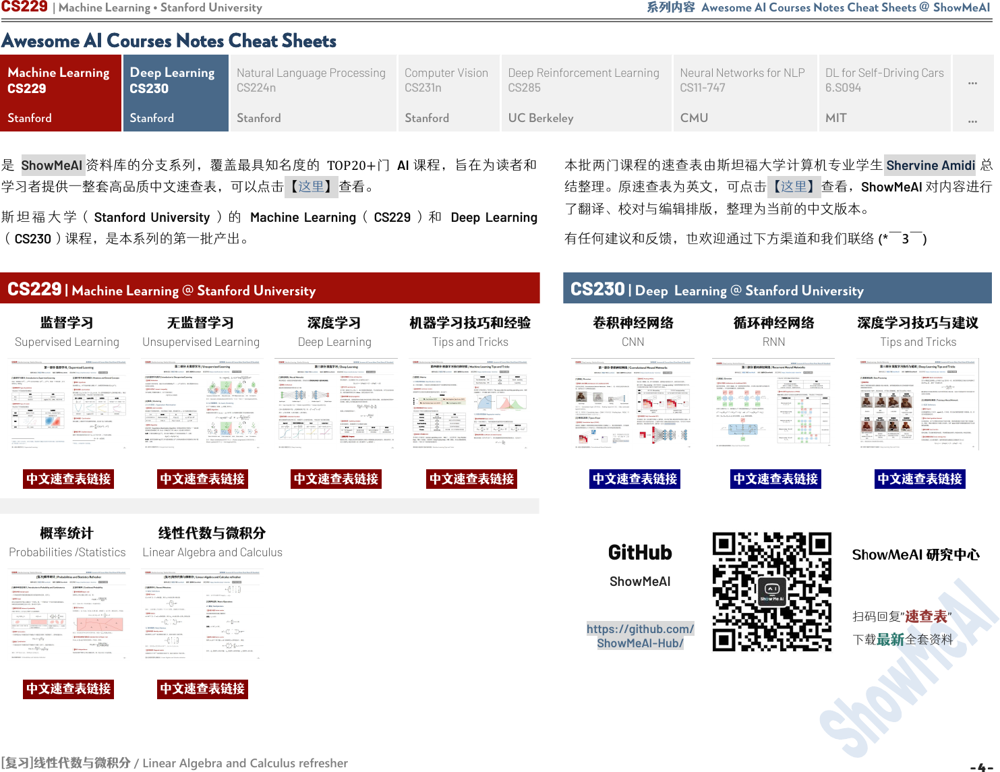

CS229 | Machine Learning • Stanford University 系列内容 Awesome AI Courses Notes Cheat Sheets @ ShowMeAI
[复习]线性代数与微积分
/ Linear Algebra and Calculus refresher
Awesome AI Courses Notes Cheat Sheets
Natural Language Processing
CS224n
Deep Reinforcement Learning
CS285
Neural Networks for NLP
CS11-747
DL for Self-Driving Cars
6.S094
是 ShowMeAI 资料库的分支系列，覆盖最具知名度的 TOP20+门 AI 课程，旨在为读者和
学习者提供一整套高品质中文速查表，可以点击【这里】查看。
斯 坦 福 大 学 （ Stanford University ） 的 Machine Learning （ CS229 ） 和 Deep Learning
（CS230）课程，是本系列的第一批产出。
本批两门课程的速查表由斯坦福大学计算机专业学生 Shervine Amidi 总
结整理。原速查表为英文，可点击【这里】查看
，ShowMeAI
对内容进行
了翻译、校对与编辑排版，整理为当前的中文版本。
有任何建议和反馈，也欢迎通过下方渠道和我们联络 (*￣3￣)
CS229 | Machine Learning @ Stanford University
CS230 | Deep Learning @ Stanford University
无监督学习
Unsupervised Learning
概率统计
Probabilities /Statistics
线性代数与微积分
Linear Algebra and Calculus
GitHub
ShowMeAI
https://github.com/
ShowMeAI-Hub/
ShowMeAI 研究中心
扫码回复”
速查表
”
下载
最新
全套资料